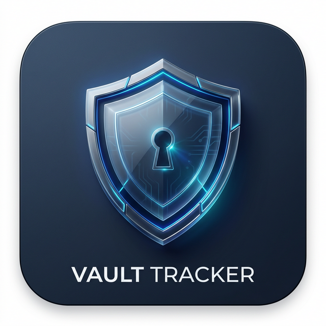

AIMLDS Apps for Android
Our official F-Droid repository — install our apps and get updates automatically.
The easy way (on your phone)
If you already have the F-Droid app, just tap this button:
F-Droid will open and ask you to confirm. Check that the fingerprint matches the one at the bottom of this page, then tap OK.
Or scan this code with your phone's camera:
Step by step
- Install F-Droid from f-droid.org if you don't have it yet. It's a free app store for open-source Android apps.
- Open F-Droid and go to Settings → Repositories.
- Tap the + button and enter this address: https://fdroid.aimlds.org/repo
- Tap Add. F-Droid may show a fingerprint — it should match the one below.
- Go back to the home screen, search for Vault Tracker, and install it. Updates will arrive through F-Droid from now on.
Apps in this repository
Vault Tracker · version 1.2.0
Zero-knowledge encrypted vault for notes, tasks, habits and expenses. No account, no tracking — your data is encrypted on your phone and never touches a server. Open source (Apache-2.0).
Source code · Download the APK directly instead
Check the fingerprint
When you add a repository, F-Droid shows a fingerprint. It proves the apps really come from us. It must read:
B03F D30B AF98 4D9E 40E7 1793 D9FF 0AAD
A7E7 2ADF 5E7A 4C56 67E0 D2DB 12BD BFEF
If it ever shows anything different, don't add the repository — tell us at info@aimlds.org.